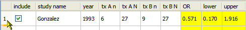
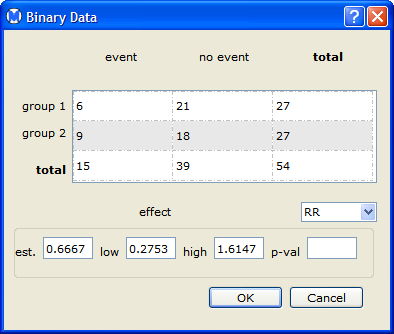

To edit an entry of a data set, click in the corresponding cell in the Data Table and type your changes.
Note: You can change the effect sizes and confidence bounds in the yellow columns, in which case the new values override the effect sizes and confidence bounds that are initially calculated from the raw data. Open Meta-Analyst uses the new values when you perform a meta-analysis.
To re-calculate and display the effect sizes and confidence bounds from the raw data in a row, double-click in any of the raw data cells in the row and then click anywhere outside the cell.
An alternative way to edit entries in the Data Table, click the number to the left of the row to reset the effect sizes and confidence bounds.

This also displays a pop-up window, shown below, in which you can edit the data entries for the row.

The table below shows the correspondence between the data row and the entries in the first two rows in the pop-up window:
| event | no event | total | |
| group 1 | tx An | tx AN - tx An | tx AN |
| group 2 | tx Bn | tx BN - tx Bn | tx BN |
| Adding a Covariate | Sorting Data by Columns | |